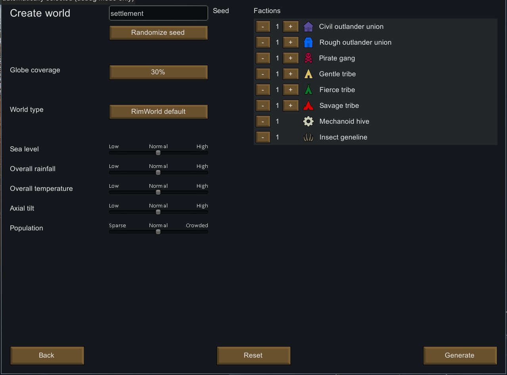
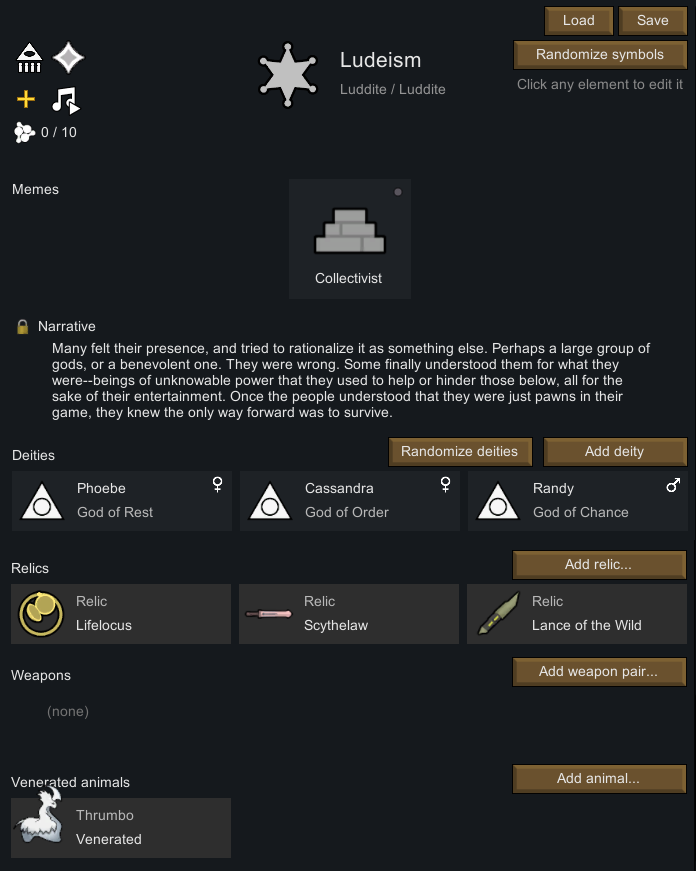

How do we start our Story?
Setting up a Colony in rim World can take 30 seconds, or up to 2 hours, Depending on how much control you want to have on the Settings. Especially Mod Managing can take quite some time if you want to avoid Mod conflicts. But for the Start, it should not take longer then 30 minutes.
Selecting your Scenario
The Scenario you chose decides with how many People you Start with, what your Tech level will be and what the General Story behind your landing is. The general Scenario is Crashlanded, but you can even get creative and make your own Scenarios!
Create your Planet
You even get to choose your Planet! Is is going to be a desolate Dessert? A Frozen Giant? Or Perhaps a lush Planet with a lot of Rain and much warmth? Do you want many Neighbours? Do you want many Tribes? Many Hightech Factions? Or would you rather have a real isolated Planet with barely any Neighbours at all? You decide.
Where do you want to Settle?
After creating the Planet, you can pick a Spot where you want to settle in. Depending on where you settle there will be different Seasons, different Rainfall Intervalls, different disease frequencys and even different Stone types to Mine.
Create your Ideology (Ideology DLC only)
Now you can pick what your Colonists will stand for, what they believe in and what they think is right, or wrong. You can also be creative and add a narrative for your Colony.
Your Colonists
Now you can choose your Starting Colonists. Every Colonists comes with their own Backstory, traits, interests and Skill Level. Some might also have Health Issues or Addictions.